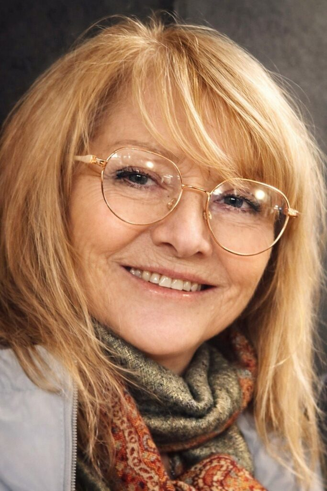

Jmenuji se Marie Čutková, známá také jako MAJA, a jsem rodačka z krásných Českých Budějovic. Toto město formovalo můj pohled na svět a umění.
Ačkoli jsem měla pestrou kariérní cestu, jedním z mých raných průvodců byl renomovaný malíř Milan Peterka, který mě naučil základy a principy klasické malby. Jeho lekce o barvě a kompozici si nesu v sobě až do dneška.
Byla jsem také mistryní České republiky na kajaku, což mi dalo disciplínu, vytrvalost a pochopení pro soutěživost. Kajak mne učil koncentraci a čtení chvíle – dovednosti, které později objevuji i v umění.
Později jsem pracovala jako vizážistka, kde jsem se naučila vnímat barvy, tvary a krásu v detailech. Tento obor mi otevřel oči pro tichou krásu v každodennosti.
Vážná autonehoda byla přelomovým momentem mého života. V dlouhém období zotavování jsem se rozhodla naplno vrhnout na to, co mě vždy lákalo – malování. To, co začalo jako terapie, se stalo vášní a posláním.
Dnes používám různé výtvarné techniky, např. akryl, kaligrafii, pastel, olej, akvarel a další. Realizuji se při lekcích pro školní třídy v muzeu, v knihovnách i na příměstských táborech. Každá technika má svůj vlastní jazyk, skrze který se snažím zachytit emoci a příběhy, které vidím ve světě.
"Věřím, že umění není luxus, ale nutnost. Učím ostatní, aby si uvědomili tu sílu, která se skrývá v jejich tvoření. Každý z nás má v sobě umělce."